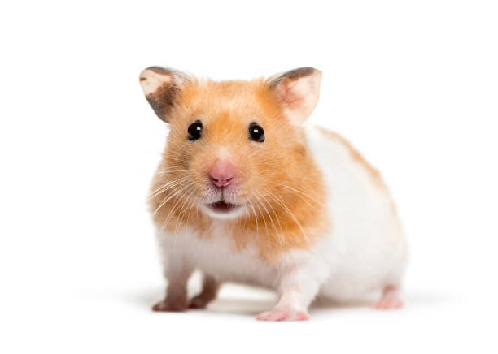

特徴
ゴールデンハムスターは、最も一般的に飼われている種類の一つです。体長は約12-15cm程度で、比較的大きめの体を持っています。毛色は金色を基調とし、フワフワした毛が特徴です。
飼育方法
ゴールデンハムスターは比較的広めのケージを必要とします。木製のトンネルやおもちゃを与えると、元気に遊びながら飼育できます。また、食事は野菜や果物を少しずつ与えることが大切です。
注意点
ゴールデンハムスターは、他のハムスターと比較してやや攻撃的な傾向があります。したがって、複数匹を一緒に飼う際は注意が必要です。また、昼間に活動音が気になる場合は、静かな場所で飼うことをお勧めします。
